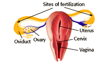

Human Reproduction Problem Set
Problem 2: Site of fertilization
Tutorial to help answer the question
| The fertilization of human eggs most commonly occurs in what part of the female reproductive system? |
Tutorial
Fertilization
|
At ovulation, a mature egg is released from one of the ovaries into the body cavity. Before it has a chance of getting lost it is captured by one of the paired tubes called Fallopian tubes or oviducts. In the Fallopian tube, the egg is slowly propelled toward the uterus. If sperm are present in the female reproductive system, one of the sperm will penetrate the egg, normally while it is still in the upper third of the Fallopian tube. |

|
Sperm journey through female reproductive system
|
It is possible to fertilize an egg with a sperm ejaculated into the vagina up to 3 days prior to ovulation. Sperm will have reached the uterus through the cervix. From there a few hundred of the original hundreds of millions sperm will have traveled up into the Fallopian tubes in search of an egg to fertilize. It is in the upper third of the Fallopian tubes that fertilization most commonly occurs. |
 |


University of Arizona
Updated: July 15, 1999
Contact the Development Team
http://www.biology.arizona.edu
All contents copyright © 1996-99. All rights reserved.